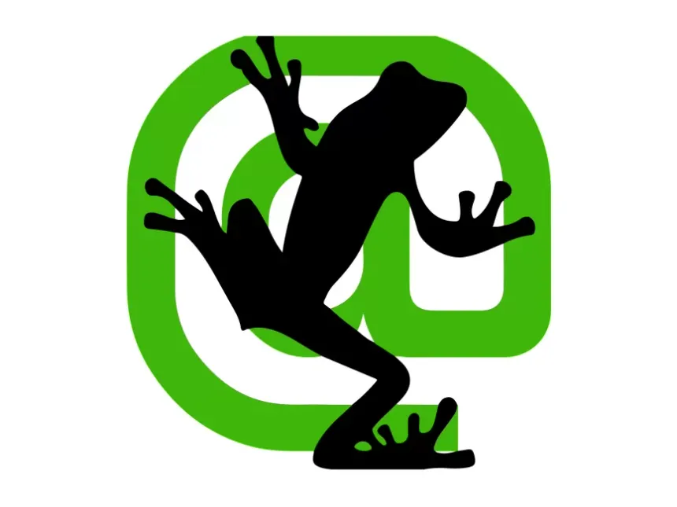
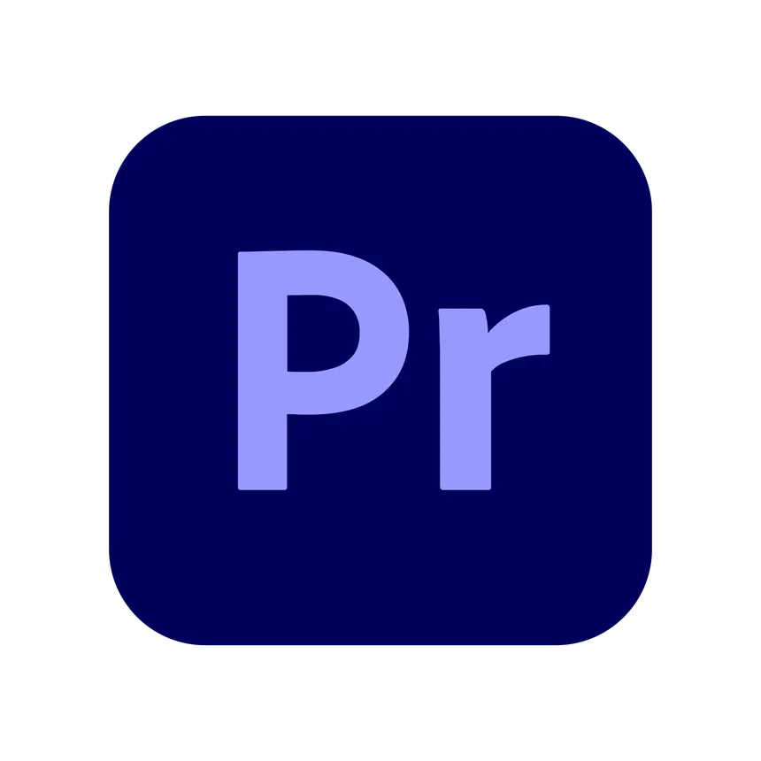
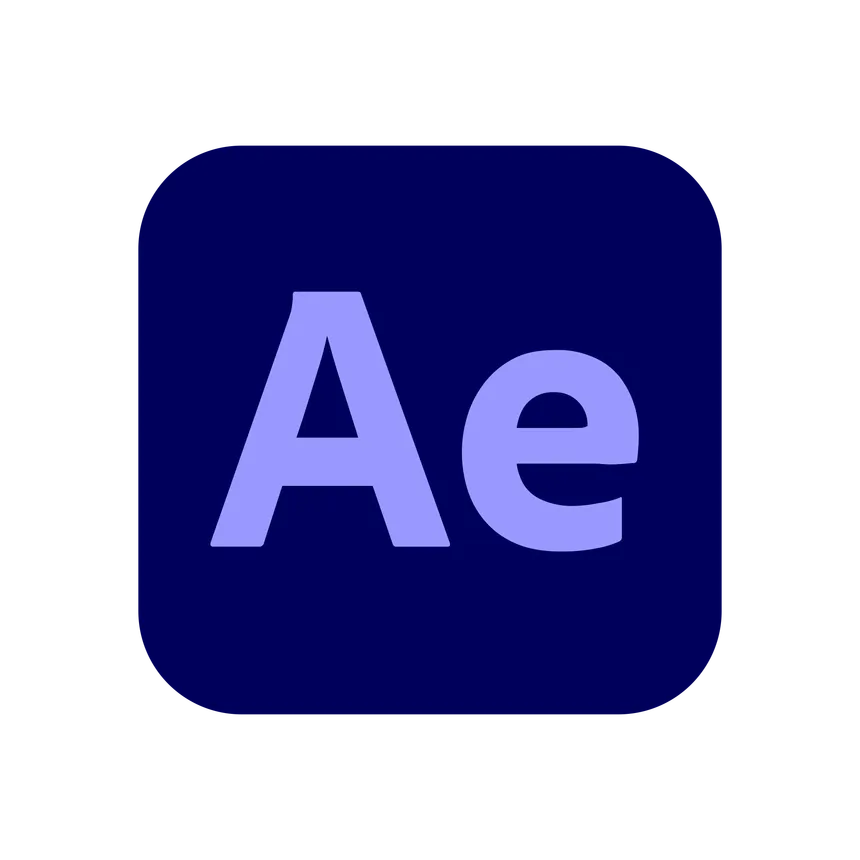

Benjamin HUNCKLER
En tant que jeune communicant, je suis toujours à la recherche d'opportunités pour développer mes compétences et mes connaissances. Ayant effectué deux années de multimédia en France, je termine ici au Canada ma formation française qui est semblable à un DEC intégration multimédia que j'effectue actuellement. Cette double diplomation que je suis en train d'acquérir me permet d'apprendre deux façons d'apprentissage, mais aussi me permet de voir le multimédia sous plusieurs angles.
J'ai de l'expérience dans la communication grâce à un stage effectué au sein du CIVA (Conseil Interprofessionnel des Vins d'Alsace) mais aussi grâce à tous les projets personnels auxquels j'ai pu travailler pour améliorer mes compétences dans le domaine de la communication. J'ai pu développer mes compétences en communication digitale et développer mes connaissances sur les différents réseaux sociaux utilisés aujourd'hui. Je suis toujours à la recherche de moyens d'améliorer mes compétences et de rester à jour sur la courbe dans ce domaine en évolution rapide.
De façon plus personnelle, j'ai 19 ans (bientôt 20), je suis passionné par le voyage, la nature et les découvertes de façon générale. Comme dis précédemment, je suis français, donc j'apprécie la bonne nourriture et le bon vin (cliché, mais vrai).
Pour me résumer, voici mes qualités et mes défauts en quelques mots :
- Qualités : consciencieux, organisé et ponctuel
- Défauts : parfois indécis, un manque de confiance en moi et académique.
Voilà, maintenant, vous savez tout de moi. Si mon profil vous a intéressé, n'hésitez surtout pas à me contacter via mon adresse e-mail ou mes numéros de téléphone.
Benjamin HUNCKLER
En tant que jeune communicant, je suis toujours à la recherche d'opportunités pour développer mes compétences et mes connaissances. Ayant effectué deux années de multimédia en France, je termine ici au Canada ma formation française qui est semblable à un DEC intégration multimédia que j'effectue actuellement. Cette double diplomation que je suis en train d'acquérir me permet d'apprendre deux façons d'apprentissage, mais aussi me permet de voir le multimédia sous plusieurs angles.
J'ai de l'expérience dans la communication grâce à un stage effectué au sein du CIVA (Conseil Interprofessionnel des Vins d'Alsace) mais aussi grâce à tous les projets personnels auxquels j'ai pu travailler pour améliorer mes compétences dans le domaine de la communication. J'ai pu développer mes compétences en communication digitale et développer mes connaissances sur les différents réseaux sociaux utilisés aujourd'hui. Je suis toujours à la recherche de moyens d'améliorer mes compétences et de rester à jour sur la courbe dans ce domaine en évolution rapide.
De façon plus personnelle, j'ai 19 ans (bientôt 20), je suis passionné par le voyage, la nature et les découvertes de façon générale. Comme dis précédemment, je suis français, donc j'apprécie la bonne nourriture et le bon vin (cliché, mais vrai).
Pour me résumer, voici mes qualités et mes défauts en quelques mots :
- Qualités : consciencieux, organisé et ponctuel
- Défauts : parfois indécis, un manque de confiance en moi et académique.
Voilà, maintenant, vous savez tout de moi. Si mon profil vous a intéressé, n'hésitez surtout pas à me contacter via mon adresse e-mail ou mes numéros de téléphone.
Mes compétences
Communication
Meta Suite
YouTube
Trello

Screaming Frogg
Google Ads
Google analytics
Audiovisuel

Premiere Pro

After Effects
Illustrator
Autres

Figma
HTML
CSS
Mes projets
Contact
Si vous êtes intéressé par mon profil, n’hésitez surtout pas à me contacter par l’un des moyens suivants :
Mon E-mail :
Mes numéros de téléphone :
+1 (418)-429-9743
+33 6.31.43.25.90